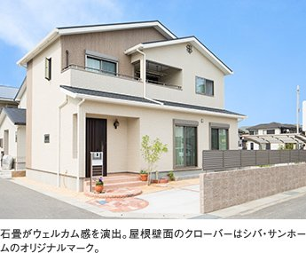
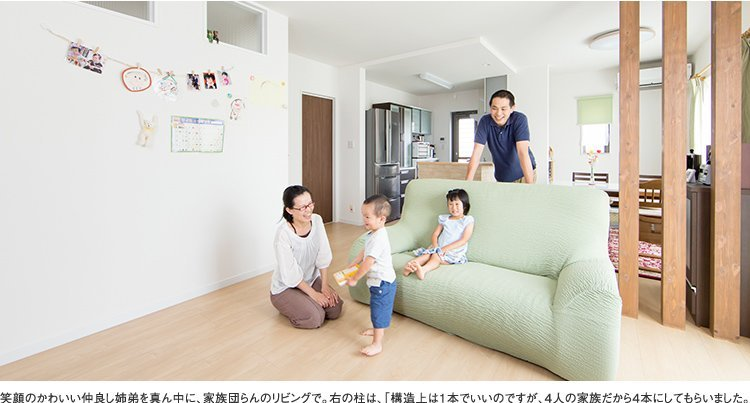

| 所在地 | 奈良県内 |
|---|---|
| ご家族 | ご夫婦とお子様おふたり |
| 取材 | 旧サイト掲載の取材原稿より |
ご主人は光あふれるダイニングで「休日の朝食のとき、しみじみ、建てて良かった、と」。実感がこもった言葉です。
社宅住まいでふたり目のお子様が生まれたのを契機に、戸建てでの子育てを決めた沓掛様ご夫妻。
まず、建売住宅に足を運びましたがピンとくる家を見つけられませんでした。さらに「今買うなら200万円、300万円まけます」、という営業トークに「そんなに簡単に下がるなんて、おかしい」と疑問を抱きますあきらめかけたときに、見つけたのがシバ・サンホームでした。
「シバ・サンホームの家づくりは子育ての目線だと感じました」と奥様。信頼できる工務店に出会えた後は、スムーズに家づくりが進みました。毎週打ち合わせに通い、およそ2ヵ月で地鎮祭まで漕ぎ着けました。

「不要なものを挙げると本当に必要なものが見えてきますよ」という具体的なアドバイスで、「2階にトイレはいらない」「廊下はいらない」など、自分たちの住みたい家の形がはっきりしたそう。
キッチンの吊戸棚をなくし、リビングを開放的にして、家族がいつも気配を感じ合える空間が生まれました。床の色、和室を独立した空間にすることなど、「悩んだものもありましたが、こっちを生かすためにこっちはあきらめようというやりとりがシバ・サンホームさんとはできたので納得して家づくりを進められました」とご主人。
初期プランの階段位置だと洗面所に収納がとれませんでしたが、「どうしても収納がほしかったので、素人ですが夜中に図面を引いたりしました」と、奥様も思い出して笑顔です。
2階の上部ロフト、マグネット入りのリビングの壁、家族の人数分の柱など、子育てへの思いがいっぱい詰まったマイホームが、ふたりのお子様の成長を見守ります。